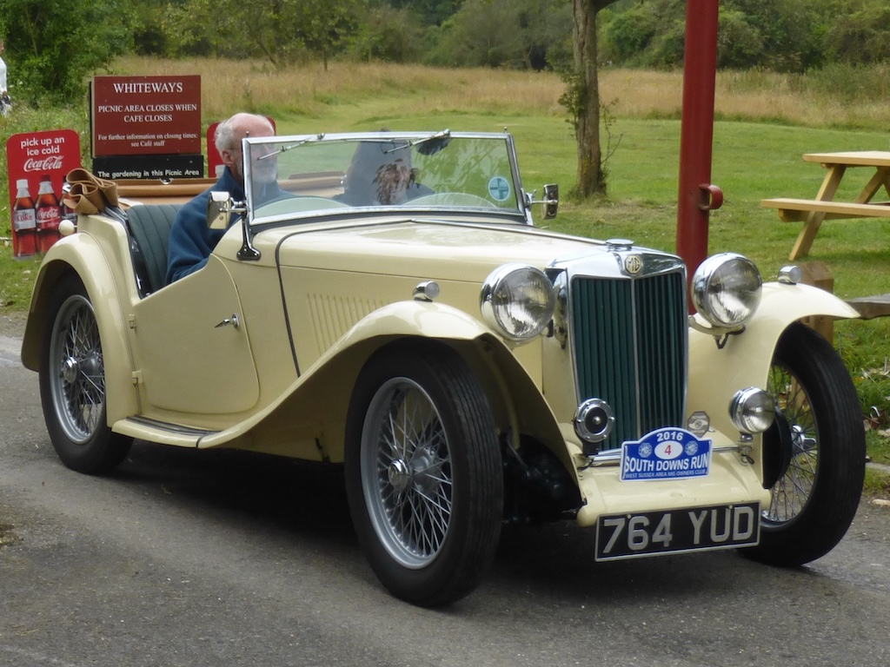
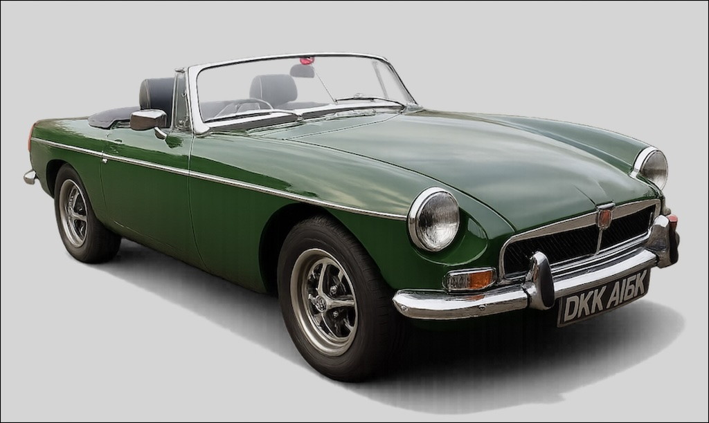
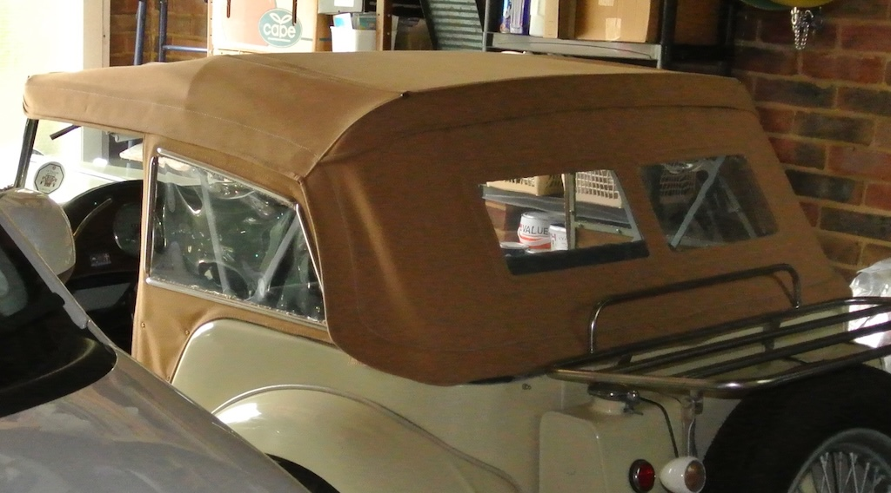
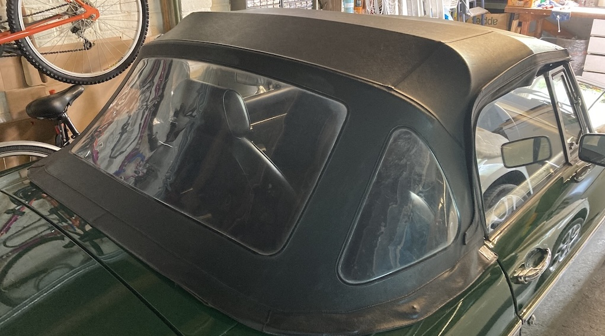

Many of you will know that in October 2025 I sold my 1948 TC, after ten and a half years of ownership. The car now resides in the Netherlands and I have an open invitation to visit it. You will also know that I decided to fill the empty space in our garage with a ‘modern’ car; a 1972 MGB. I’d always liked the B Roadster, but never owned one. So I thought that now was my chance, not only to replace my 77 year-old classic car with a 53 year-old car, but one that would be more suited to modern roads and traffic and could be used more often and for longer journeys. I know that some TC owners take their cars all over Europe (one owner drove his TC from India to the UK), but I’d always been apprehensive to do more than a one day run. In fact, the South Downs Run (with its return journey) was the longest trip I did in the TC.

Until I’d looked at a B with the thought of purchase, I’d only looked at one from afar, or peered into the cockpit. However, when I examined a B at close quarters it dawned on me that, over a quarter of a century, cars had become much more complicated. Not only did they have additional features, but even the basic functions seemed to be implemented in a more complex manner, and some of those implementations seemed to have taken a retrograde step.
Let’s start by looking at some of those additional features, such as side windows; and wind-up ones at that. The side screens on the TC were effective, but a pain to slot into the bodywork and even more difficult to stow in the side screen box. The B has seats that provide lateral support (one would slide across the TC’s seats, particularly with the single backrest) and they come with seat belts, the lack of which was one of the worries about driving the TC. Then, unlike the TC, the B has a heater. Actually, the heat coming through the TC’s firewall was usually enough to keep you warm, but you still needed a thick coat, gloves and a wooly hat in winter.
My TC had been fitted with indicators; rear ones attached to a luggage rack, which were quite clear, but front ones inside the existing side lights. These were not clear at all and it was often prudent to release the clip on the side screen flap and stick your arm out! However, the B has a column mounted stalk and clear indicator lights. At the moment they may not always cancel, but that can be fixed. The other addition inside the cockpit is a radio. At least, the radio and aerial are there and the radio front panel is in a plastic case, but I’v not yet got around to seeing if it works!
The other changes are associated with the driving of the car. The B has independent front suspension, replacing the beam axle of the TC, and the gearbox not only has synchromesh on all forward gears, but also an overdrive, making higher speed driving more relaxed. Then there are the brakes. The TC had drums all round, which on my TC were made of cast iron. Changing the linings to a softer material helped, but you still had to leave plenty of space in front and lean heavily on the pedal to have any effect. The B, of course, has discs on the front, but still drums at the rear. In spite of there being a brake servo I was surprised at the pressure required to stop the car. However, it gives you much more confidence that it is going to stop.
I mentioned that the B has independent front suspension, with coil springs, although it still has ‘cart’ springs at the rear. The TC had leaf springs front and back and was a bit ‘bouncy’. However, the dampers on the B are still of the hydraulic lever type, and that brings me to one of the retrograde steps. On the TC you could easily reach the top of the dampers so as to check the hydraulic fluid level. Admittedly you had to remove the wooden floor in the tonneau area (just four screws), but you could see the whole damper from the top. On the B you can check the level in the rear dampers by lifting the carpet over the battery cover and removing the large bung in the inner wheel arch. But to check the fluid level in the front dampers you need to jack up the front of the car, remove the front wheels and reach up to the top of the damper. That needs planning and preparation.
Another fluid level that needs checking is the oil in the gearbox. Both cars have a dipstick that is accessible from within the driver’s footwell. However, to reach the dipstick on the B you have to reach behind the radio console, remove a large bung to expose a hole that has a diameter of about three fingers width and reach down to find the top of the dipstick. Even removing the central console and radio console doesn’t help with access (I’ve tried) and all I can do is feel the top of the dipstick. If I ever manage to get it out (whichI haven’t yet), I don’t know how I would find the hole to get it back in!
Whilst on the subject of fluid levels, that in the differential is another retrograde step. Removing the afore mentioned floor in the TC’s tonneau area gave you easy access to both the level plug and the oil filler. On the B they are one and the same and only accessible from under the car.
Admittedly the gearbox and differential oil levels don’t need to be checked very often, but from a maintenance point of view doing so on the TC was much easier than on the B.
You may be pleased to hear that I only have two more retrograde items that have resulted from a quarter of a century of automotive development. The first is the battery, or batteries. On the TC the battery box, with a quick release clip, was under one side of the bonnet (each side could be lifted separately). The B, however, originally had two 6-volt batteries in boxes behind the seats. To get at them you have to move a seat forward, remove the carpet from the shelf and release the five quarter-turn fasteners on the battery box cover so as to lift away the metal cover.
On my car the two 6-volt batteries have been replaced with a single 12-volt battery that fits within the offside box. I’ve installed a battery monitor, with a bluetooth interface to an app on my phone, and I have a lead protruding from under the cover to which I can attach a charger if required. However, I’m also thinking of installing an isolator switch in the heel-board. That would provide quick isolation of the battery and act as an immobiliser.
So finally we come to my last retrograde ‘development’; the hood. Now the TC’s hood was fairly straightforward to put up and down. You simply:
- Raised the front bar to the top of the windscreen
- Stretched one side to get the bar to locate on a pin on the windscreen
- Tightened a wing-nut
- Stretched and tightened on the other side


The hood on the B, on the other hand, has a much more complicated frame. To raise it you have to:
- Lift the hood part way
- Lower the folded-in sides and engage a clip on each side
- Fit the rear bar under two hooks
- Engage the four lift-the-dots on each of the two rear quarters
- Stretch the hood to the windscreen top rail
- Get inside the car and engage the two clips before closing them
- Engage press-studs on straps at the front and middle of the hood to the frame
You would get very wet if you had to raise the hood in a hurry!
Do I miss the simplicity of the TC? Yes. Am I enjoying the B? Yes, there is so much for me to learn. At least the engine, carburettors and distributor work in the same way, although the points have been replaced with a Magnetronic electronic ignition system. Something else to learn about.